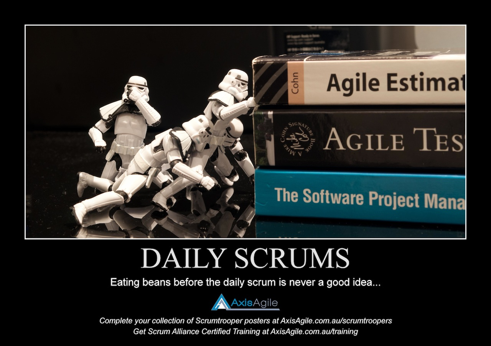
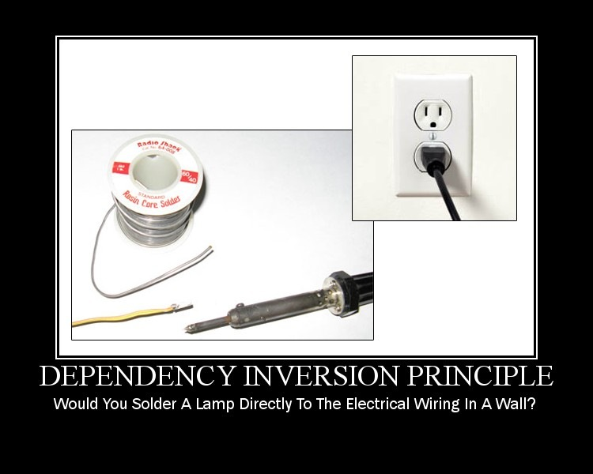

SOLID
Principes pour un development Agile
Ecrit par Laurent Thil
Nouvelle donne !
Votre management à decidé d'utiliser les principes Agiles. La methode Scrum va être mise en place.
Agile, oui mais ...
Cela implique que ...
- le developement sera iteratif
- le code sera soumis à des evolutions
- .. ainsi que vos tests ..
.. en gros votre code devra être Agile
L'est -il ?
Comme indication utilisez les 'design smells' suivants:
- Rigide : resite au changement
- Fragile : une partie du logiciel de fonctionne plus quand un modification est faite ailleurs
- Immobile : re-utilisation difficile
- Visqueux : plus de hacks que de design
- Complex :
- Repetitif : duplication de certaine parties
- Opaque : difficile à comprendre
Si un de ces symptôme est present votre code n'est pas agile.
Comment en somme nous arrivés là ?
Pour des raison telles que
- Cycle en V: les besoins changes
- Code est chaotique par nature
- Pas de bonne connaissances en OO design
Aidons nous avec ...

Solid ..
Un acronyme pour 5 principes:
- Single responsability principle
- Open close principle
- Liskov substitution principle
- Interface segregation principle
- Dependency inversion principle
Single responsability principle

SRP dit: Il ne devrait y avoir qu'une seule raison pour laquelle une classe change.
1 raison = 1 responsablititée.
X raisons = X changements
X changements = X occasions d'introduire des bugs
X changements = stabilitée douteuse de l'object
Example
public class BasicCar {
void turnLeft(){}
void turnRight(){}
void forward(){}
void reverse(){}
void doGeoPosition(){}
}
2 raisons de changer: comportement standard d'une voiture et comportement avancé.
Amélioration par les patterns Template ou composition.
public class BasicCar {
void turnLeft(){}
void turnRight(){}
void forward(){}
void reverse(){}
}
public class GeoCar extends BasicCar{
void doGeoPosition(){}
}
Ici utilisation du pattern template.
Open close principle

OCP dit: entitées ( objects, modules, ...) doivent êtres ouvertes à l'extension et fermées à la modifications.
Autrement ont doit pouvoir alterer le comportement d'une entitée sans en modifier son code source.
Classe initiale
public class TrackingCar{
void trackGpsSignal(Signal source){}
}
Classe modifiée
public class TrackingCar{
void trackGpsSignal(Signal source){}
void trackGlonasSignal(Signal source){}
}
OCP non suivit ici: classe initiale à été modifiée pour l'extension
Amelioration avec le template pattern
public class TrackingCar{
public abstract void trackSignal(Signal source);
}
public class GpsTrackingCar extends TrackingCar{
trackSignal(Signal source){}
}
public class GlonasTrackingCar extends TrackingCar{
trackSignal(Signal source){}
}
Amelioration avec le pattern Strategy
public class TrackingCar{
public TrackingCar(TrackingStrategy strategy){}
public void track( Signal source){
strategy.track( source);
}
}
public class GpsTrackingStrategy implements TrackingStrategy{
void track(Signal source){}
}
public class GlonasTrackingStrategy implements TrackingStrategy{
void track(Signal source){}
}
Liskov substitution principle

LSP dit: si une fonction fait reference à un object de base, elle doit être capable d'en utiliser les sous-types sans le savoir.
Ne pas le faire tend à violer OCP
Example
interface ISignal{
public void track();
}
public class GpsSignal implements ISignal {
public void track(){};
public warmupGpsSignal(){};
}
public class GlonasSignal implements ISignal {
public void track(){};
public warmupGlonasSignal(){};
}
GpsSignal et GlonasSignal semblent être interchangeable
LSP et OCP violation
public class TrackingStrategy{
public void warmUpSignal(ISignal signal){
if( signal instanceof GpsSignal){
((GpsSignal) signal) warmupGpsSignal();
} else if( signal instanceof GlonasSignal){
((GlonasSignal) signal) warmupGlonasSignal();
}
}
}
OCP n'est pas respecté car TrackingStrategy doit être modifié si un nouvel ISignal implementation est introduit
cause: GpsSignal et GlonasSignal ne respectent pas LSP
modification en suivant Design by Contract
interface ISignal{
public void track();
public void warmupSignal();
}
public class GpsSignal implements ISignal {
public void track(){};
public void warmupSignal(warmupGpsSignal(););
private warmupGpsSignal(){};
}
public class GlonasSignal implements ISignal {
public void track(){};
public void warmupSignal(warmupGlonasSignal(););
private warmupGlonasSignal(){};
}
Interface segregation principle

ISP dit: Une implementation ne devrait pas dependre sur des interfaces qu'elle n'a pas besoin.
Autrement dit:
- ne pas creer d'interface 'universelle'
- penser à la responsabilité que l'interface veux presenter
- favoriser la composition
Example violant ISP
interface IGeneralCar {
void turn(){}
void forward(){}
void reverse(){}
void senseObstacle(){}
void autoPark(){}
}
public class DeuxCV implements IGeneralCar {
void turn(){}
void forward(){}
void reverse(){}
void senseObstacle(){
return new Exception("not implemented")
}
void autoPark(){{
return new Exception("not implemented")
}
}
Mieux
interface IGeneralCar {
void turn(){}
void forward(){}
void reverse(){}
}
interface IAdvanceCar {
void senseObstacle(){}
void autoPark(){}
}
public Car CaptureCar implements IGeneralCar, IAdvanceCar {
...
}
Dependency inversion principle
DIP dit:
- Les modules de haut niveau ne doivent pas dependre sur des modules de bas niveau; Les deux doivent dependre sur des abstraction
- Les abstractions ne doivent pas dependrent des details. Les details doivent dependre des abstractions
? ... Humm...
De quoi parle t'on ici ?
- DIP traite de minimiser les dependences entre modules
- En Java un module peut être considére comme un package
- Donc, minimiser les dependences enre packages
ne faites pas comme ca
package com.ia.automotive
public AdvanceCar(){
private ManualDrivingSystem drive
void driveLeft(){
drive.driveLeft();
}
}
package com.ia.automotive.drivingsystem
public DrivingSystem{
driveLeft(){}
}
Dependence direct de com.ia.automotive vers com.ia.automotive.drivingsystem
Inversez les dependences
package com.ia.automotive
public AdvanceCar(){
DrivingSystem drive
void driveLeft(){
drive.driveLeft();
}
}
public interface DrivingSystem{
driveLeft();
}
package com.ia.automotive.manualdriving
public ManualDrivingSystem implements DrivingSystem {
driveLeft(){}
}
package com.ia.automotive ne depends plus d'un sous package
-> les dependences sont inversées
le module de haut niveaux est plus facilement extractible.
Conclusion
benefices de SOLID
- bas couplage des modules
- haut niveau de cohesion
- encapsulation : les details sont cachés.
Solid sublime OO design, evite prodedural